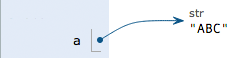

数据类型和变量
数据类型
计算机顾名思义就是可以做数学计算的机器，因此，计算机程序理所当然地可以处理各种数值。但是，计算机能处理的远不止数值，还可以处理文本、图形、音频、视频、网页等各种各样的数据，不同的数据，需要定义不同的数据类型。在Python中，能够直接处理的数据类型有以下几种：
整数
Python可以处理任意大小的整数，当然包括负整数，在程序中的表示方法和数学上的写法一模一样，例如：1，100，-8080，0，等等。
计算机由于使用二进制，所以，有时候用十六进制表示整数比较方便，十六进制用0x前缀和0-9，a-f表示，例如：0xff00，0xa5b4c3d2，等等。
浮点数
浮点数也就是小数，之所以称为浮点数，是因为按照科学记数法表示时，一个浮点数的小数点位置是可变的，比如，1.23x10<sup>9</sup>和12.3x10<sup>8</sup>是完全相等的。浮点数可以用数学写法，如1.23，3.14，-9.01，等等。但是对于很大或很小的浮点数，就必须用科学计数法表示，把10用e替代，1.23x10<sup>9</sup>就是1.23e9，或者12.3e8，0.000012可以写成1.2e-5，等等。
整数和浮点数在计算机内部存储的方式是不同的，整数运算永远是精确的（除法难道也是精确的？是的！），而浮点数运算则可能会有四舍五入的误差。
字符串
字符串是以单引号'或双引号"括起来的任意文本，比如'abc'，"xyz"等等。请注意，''或""本身只是一种表示方式，不是字符串的一部分，因此，字符串'abc'只有a，b，c这3个字符。如果'本身也是一个字符，那就可以用""括起来，比如"I'm OK"包含的字符是I，'，m，空格，O，K这6个字符。
如果字符串内部既包含'又包含"怎么办？可以用转义字符\来标识，比如：
'I\'m \"OK\"!'
表示的字符串内容是：
I'm "OK"!
转义字符\可以转义很多字符，比如\n表示换行，\t表示制表符，字符\本身也要转义，所以\\表示的字符就是\，可以在Python的交互式命令行用print()打印字符串看看：
>>> print('I\'m ok.')
I'm ok.
>>> print('I\'m learning\nPython.')
I'm learning
Python.
>>> print('\\\n\\')
\
\
如果字符串里面有很多字符都需要转义，就需要加很多\，为了简化，Python还允许用r''表示''内部的字符串默认不转义，可以自己试试：
>>> print('\\\t\\')
\ \
>>> print(r'\\\t\\')
\\\t\\
如果字符串内部有很多换行，用\n写在一行里不好阅读，为了简化，Python允许用'''...'''的格式表示多行内容，可以自己试试：
>>> print('''line1
... line2
... line3''')
line1
line2
line3
上面是在交互式命令行内输入，注意在输入多行内容时，提示符由>>>变为...，提示你可以接着上一行输入。如果写成程序，就是：
print('''line1
line2
line3''')
多行字符串'''...'''还可以在前面加上r使用，请自行测试。
布尔值
布尔值和布尔代数的表示完全一致，一个布尔值只有True、False两种值，要么是True，要么是False，在Python中，可以直接用True、False表示布尔值（请注意大小写），也可以通过布尔运算计算出来：
>>> True
True
>>> False
False
>>> 3 > 2
True
>>> 3 > 5
False
布尔值可以用and、or和not运算。
and运算是与运算，只有所有都为True，and运算结果才是True：
>>> True and True
True
>>> True and False
False
>>> False and False
False
>>> 5 > 3 and 3 > 1
True
or运算是或运算，只要其中有一个为True，or运算结果就是True：
>>> True or True
True
>>> True or False
True
>>> False or False
False
>>> 5 > 3 or 1 > 3
True
not运算是非运算，它是一个单目运算符，把True变成False，False变成True：
>>> not True
False
>>> not False
True
>>> not 1 > 2
True
布尔值经常用在条件判断中，比如：
if age >= 18:
print('adult')
else:
print('teenager')
空值
空值是Python里一个特殊的值，用None表示。None不能理解为0，因为0是有意义的，而None是一个特殊的空值。
此外，Python还提供了列表、字典等多种数据类型，还允许创建自定义数据类型，我们后面会继续讲到。
变量
变量的概念基本上和初中代数的方程变量是一致的，只是在计算机程序中，变量不仅可以是数字，还可以是任意数据类型。
变量在程序中就是用一个变量名表示了，变量名必须是大小写英文、数字和_的组合，且不能用数字开头，比如：
a = 1
变量a是一个整数。
t_007 = 'T007'
变量t_007是一个字符串。
Answer = True
变量Answer是一个布尔值True。
在Python中，等号=是赋值语句，可以把任意数据类型赋值给变量，同一个变量可以反复赋值，而且可以是不同类型的变量，例如：
a = 123 # a是整数
print(a)
a = 'ABC' # a变为字符串
print(a)
这种变量本身类型不固定的语言称之为动态语言，与之对应的是静态语言。静态语言在定义变量时必须指定变量类型，如果赋值的时候类型不匹配，就会报错。例如Java是静态语言，赋值语句如下（// 表示注释）：
int a = 123; // a是整数类型变量
a = "ABC"; // 错误：不能把字符串赋给整型变量
和静态语言相比，动态语言更灵活，就是这个原因。
请不要把赋值语句的等号等同于数学的等号。比如下面的代码：
x = 10
x = x + 2
如果从数学上理解x = x + 2那无论如何是不成立的，在程序中，赋值语句先计算右侧的表达式x + 2，得到结果12，再赋给变量x。由于x之前的值是10，重新赋值后，x的值变成12。
最后，理解变量在计算机内存中的表示也非常重要。当我们写：
a = 'ABC'
时，Python解释器干了两件事情：
在内存中创建了一个
'ABC'的字符串；在内存中创建了一个名为
a的变量，并把它指向'ABC'。
也可以把一个变量a赋值给另一个变量b，这个操作实际上是把变量b指向变量a所指向的数据，例如下面的代码：
a = 'ABC'
b = a
a = 'XYZ'
print(b)
最后一行打印出变量b的内容到底是'ABC'呢还是'XYZ'？如果从数学意义上理解，就会错误地得出b和a相同，也应该是'XYZ'，但实际上b的值是'ABC'，让我们一行一行地执行代码，就可以看到到底发生了什么事：
执行a = 'ABC'，解释器创建了字符串'ABC'和变量a，并把a指向'ABC'：

执行b = a，解释器创建了变量b，并把b指向a指向的字符串'ABC'：

执行a = 'XYZ'，解释器创建了字符串'XYZ'，并把a的指向改为'XYZ'，但b并没有更改：

所以，最后打印变量b的结果自然是'ABC'了。
常量
所谓常量就是不能变的变量，比如常用的数学常数π就是一个常量。在Python中，通常用全部大写的变量名表示常量：
PI = 3.14159265359
但事实上PI仍然是一个变量，Python根本没有任何机制保证PI不会被改变，所以，用全部大写的变量名表示常量只是一个习惯上的用法，如果你一定要改变变量PI的值，也没人能拦住你。
最后解释一下整数的除法为什么也是精确的。在Python中，有两种除法，一种除法是/：
>>> 10 / 3
3.3333333333333335
/除法计算结果是浮点数，即使是两个整数恰好整除，结果也是浮点数：
>>> 9 / 3
3.0
还有一种除法是//，称为地板除，两个整数的除法仍然是整数：
>>> 10 // 3
3
你没有看错，整数的地板除//永远是整数，即使除不尽。要做精确的除法，使用/就可以。
因为//除法只取结果的整数部分，所以Python还提供一个余数运算，可以得到两个整数相除的余数：
>>> 10 % 3
1
无论整数做//除法还是取余数，结果永远是整数，所以，整数运算结果永远是精确的。
练习
请打印出以下变量的值：
n = 123
f = 456.789
s1 = 'Hello, world'
s2 = 'Hello, \'Adam\''
s3 = r'Hello, "Bart"'
s4 = r'''Hello,
Lisa!'''
小结
Python支持多种数据类型，在计算机内部，可以把任何数据都看成一个“对象”，而变量就是在程序中用来指向这些数据对象的，对变量赋值就是把数据和变量给关联起来。
注意：Python的整数没有大小限制，而某些语言的整数根据其存储长度是有大小限制的，例如Java对32位整数的范围限制在-2147483648-2147483647。
Python的浮点数也没有大小限制，但是超出一定范围就直接表示为inf（无限大）。